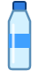
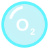
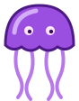
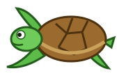

♥♥♥
Vidas: 3/3
O₂
60 s
Fase 1/4
Pontos 0
Resíduos 0/12
Tartaruga pendente
Operação Oceano Guardião do Recife
Recolha o lixo do recife, resgate a tartaruga e volte antes que o oxigênio acabe!
Como Jogar
- WASD ou ↑←↓→ Nade em qualquer direção.

Objetivo: recolha pelo menos 12 resíduos (todos os 15 na fase 4; garrafa +10, sacola +15, lata +20) e encoste na tartaruga para resgatá-la (+100).
Oxigênio: você tem 60 segundos na fase 1, 40 na fase 2 e 30 nas fases 3 e 4. Cada bolha de O₂ devolve 12 segundos (6 na fase 3; a fase 4 não tem bolhas). As bolhas somem depois de alguns segundos!
Vidas: você começa com 3. Encostar em uma água-viva tira uma vida. Com o tempo, elas ficam mais rápidas.
Fases: são 4. Na fase 2 a tartaruga nada pelo recife — alcance-a! Na fase 3 ela nada mais rápido, há 6 águas-vivas e elas ficam mais agitadas na metade do oxigênio. Na fase 4 surge a água-viva mãe: gigante, rápida, e um único toque acaba com todas as suas vidas! A pontuação é acumulada.- P ou Esc Pausa e retoma a partida.
Você perde se as vidas ou o oxigênio chegarem a zero antes de completar a missão.
Créditos
- Desenvolvimento
- Kenzo
- Disciplina
- Projeto final — Desenvolvimento de Jogos com HTML, CSS e JavaScript
- Arte
- Sprites originais em SVG e cenário desenhado no Canvas 2D
- Tecnologias
- HTML5, CSS3 e JavaScript puro (Canvas 2D)
Jogo pausado
Respire fundo, mergulhador!
Fase concluída!
A tartaruga está a salvo. Mas o recife ainda precisa de você!
Pontuação: 0
🌊🐢🌊
Parabéns! Oceano limpo!
Você concluiu todas as fases, recolheu o lixo do recife e salvou as tartarugas. O oceano agradece, guardião!
Pontuação final: 0
Fim de jogo
Pontuação final: 0